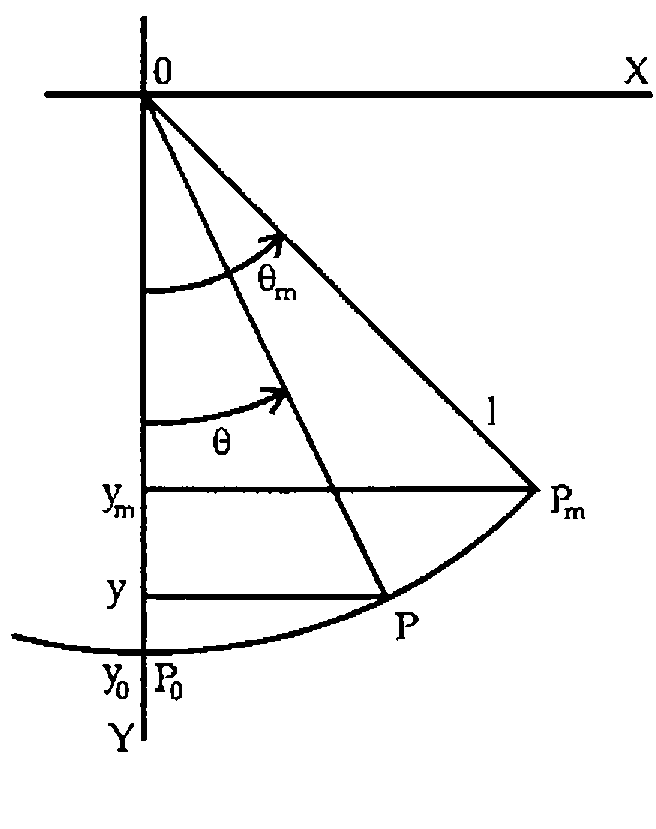

Swinging with APL: the Simple Pendulum
Vector 13:2, page 128
Transcribed from the printed issue; not yet reviewed. Read it in the PDF of the issue, page 128
Abstract¶
Calculation of time t as a function of the declination θ of the simple pendulum with length l is reduced to the calculation of an incomplete elliptic integral of the first kind K(ϕ;p). For the period T this is reduced to the calculation of a complete elliptic integral of the first kind K(p). Algorithms, based on the common mean concept, are illustrated with APL user-defined functions. Examples are given.
Introduction¶

In a previous paper [1], we have shown that the rectification of a lot of so-called closed curves is reduced to the calculation of elliptic integrals. The elliptic integrals were evaluated with algorithms based on the common mean concept [2], as such algorithms are much more efficient in cpu time than those based on gaussian quadrature or serious expansion. Implementation was illustrated with APL user-defined functions, calling the user-defined functions described in [3] and [4]. In this paper, we follow the same line of thought for the solution of the simple or plane pendulum: the calculation of time t as a function of the declination θ [5].
The Simple Pendulum¶
The simple or plane pendulum consists of a mass point m (P) at one end of a massless rigid rod with length l, pivoted at the other end (0) and placed in a uniform gravitational field g. Let P (declination θ) be moving from the equilibrium position P0 (declination 0) towards its maximum displacement Pm (maximum declination or amplitude θm).
Time versus Declination¶
Kinetic energy of the system is: ½mv2 with
v = ds/dt and s = lθ (v = l dθ/dt)
Potential energy of the system is: mgl (1 − cos θ)
as y0 = l and y = l cos θ
Conservation of energy gives: ½mv2 + mgl (1 − cos θ) = mgl (1 − cos θm)
½mv2 = mgl (cos θ − cos θm)
v = √(2gl (cos θ − cos θm))
Substituting v by l dθ/dt we get: dθ/dt = √((2g/l)(cos θ − cos θm))
or: dt = √(l/2g) · dθ / √(cos θ − cos θm)
Setting the time at the equilibrium point t0 = 0, time t for declination θ becomes:
t = √(l/2g) ∫0θ dθ / √(cos θ − cos θm)
Substituting: sin(θ/2) = p sin ϕ with p = sin(θm/2)
dθ = 2p cos ϕ dϕ / √(1 − p2 sin2 ϕ)
we have: √(cos θ − cos θm) = √(2(sin2(θm/2) − sin2(θ/2))) = √2 p cos ϕ
such that: t = √(l/g) ∫0ϕ dϕ / √(1 − p2 sin2 ϕ) = √(l/g) K(ϕ;p)
K(ϕ;p) being the incomplete elliptic integral of the first kind with
ϕ = arc sin(sin(θ/2) / p) and p = sin(θm/2).
APL Function¶
An APL user-defined function TIME for calculating time t as a function of the declination θ may be:
∇TIME[⎕]∇
∇T←LA TIME D;F;P
[1] F←((1↑LA)÷980.6294)*0.5
[2] P←1○○(1↓LA)÷360
[3] T←F×(¯1○(1○○D÷360)÷P) IEI1 P
∇
with: LA being the catenation of the length l (cm) and the maximum declination or amplitude θm (degrees°)
- D the declination θ (degrees°)
- P the parameter p = sin(θm/2)
- F the factor √(l/g)
- IEI1 the user-defined function described in [4]
and geodetic constant g being set to 980.6294cm/sec2 (Hayford latitude 45°) [6].
Example: l = 100cm, θm = 60°, θ = 10°(10°)60°
LA←100 60
D←10×⍳6
2 0 12 6 ⍕ D,⊃(6⍴⊂LA) TIME¨ D
10 0.056021
20 0.113851
30 0.175831
40 0.245926
50 0.333733
60 0.538320
Note:¶
The time to go from position P0 to maximum displacement Pm (θ = θm or ϕ = π/2) is one-fourth of the period T. Therefore, the period of the pendulum is:
T = 4√(l/g) ∫0π/2 dϕ / √(1 − p2 sin2 ϕ) = 4√(l/g) K(p)
with p = sin(θm/2) and K(p) being the complete elliptic integral of the first kind.
The period T may be calculated with the function TIME, setting the right argument to the maximum declination or amplitude θm, and multiplying the result by 4. An APL user-defined function PERIOD for calculating the period directly from the complete elliptic integral of the first kind, more efficient in cpu time, may be:
with: L being the length l (cm)
- A the maximum declination of amplitude θm (degrees °)
- CEI1 the user-defined function described in [3]
and the geodetic constant g being set to 980.6294cm/sec2 (Hayford latitude 45°) [6]. The period T is returned in seconds.
Example: l = 100cm, θm = 60°
References¶
- J. De Kerf: Rectification with APL; APL-CAM Journal, Vol. 17, No. 4, 16th December 1995 pp. 560 - 582.
- J. De Kerf: The Common Mean and APL; APL-CAM Journal, Vol. 16, No. 3, 16th July 1994, pp. 370 - 372.
See also: Vector, Vol. 11, No. 3, January 1995, pp. 21 - 23. - J. De Kerf: The Complete Elliptic Integrals and APL; APL-CAM Journal, Vol. 16, No. 4, 16th October 1994, pp. 631 - 635.
See also: Vector, Vol. 12, No. 1, July 1995, pp. 102 - 106. - J. De Kerf: The Incomplete Elliptic Integrals and APL - An Extension; APL-CAM Journal, Vol. 17, No. 3, 16th September 1995, pp. 455 - 460.
See also: Vector, Vol. 12, No. 2, October 1995, pp. 95 - 100. - H.C. Corben and P. Stehle: Classical Mechanics; John Wiley & Sons, New York, 1950.
- M.Abramowitz and L.A. Stegun (eds.): Handbook of Mathematical Functions; Applied Mathematics Series No. 55; National Bureau of Standards, Washington D.C., 1964 (and subsequent revisions).
Appendix¶
For convenience of the reader, the APL user-defined functions CEI1 [3] and IEI1 [4], referred to in this paper, are reproduced here:
∇CEI1[⎕]∇
∇R←CEI1 P
[1] R←1,(1-P*2)*0.5
[2] LAB:→(≠/R←(0.5×+/R),(×/R)*0.5)/LAB
[3] R←(○1)÷+/R
∇
∇IEI1[⎕]∇
∇R←F IEI1 P;I;A;B
[1] →((1≠|P)∨(○÷2)≤|F)/LAB1
[2] →0,R←⍟3○0.5×F+○0.5
[3] LAB1:R←(2+I←¯1),÷÷(1-P*2)*0.5
[4] LAB2:A←(-/R)×1○F×2*1+I←I+1
[5] B←2×+/R×(2 1○F×2*I)*2
[6] F←F-(¯3○A÷B)÷2*I+1
[7] →(≠/R←(0.5×+/R),(×/R)*0.5)/LAB2
[8] R←F÷0.5×+/R
∇